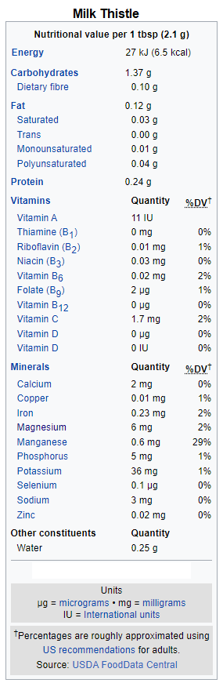

Wiki-Plant
Milk Thistle
Liver Health
Milk Thistle
 Additional InfoCommon name: Milk thistle
Scientific plant name: Silybum marianum (L.) Gaertn.
Origin: Silybum marianum is native to the Mediterranean region of Europe including Greece (mostly in Crete), east into Iran and Afghanistan. It is possibly native near the coast of southeast England. S. marianum has been widely introduced outside its natural range, for example into North America, Hawaii, Australia, New Zealand, Colombia where it is considered an invasive weed.
Harvest season: To harvest seeds, we cut off flower heads at the end of the growing season, often May-July, when white cottony fibers (pappus) appear. plant.
Production: It is mainly cultivated as a medicinal plant but it's also mentioned as a food source. It's mainly cultivated in Europe but also in Asia and North America. Milk thistle is a biennial plant, it is normally grown as a annual plant, which simplifies cultivation. This can be achieved when the main requirements are met, then the milk thistle already blossoms in the first year.
Health benefits: Milk thistle (Silybum marianum, Asteraceae) contains a class of polyphenols known as flavonolignans that have demonstrated both chemopreventive and chemosensitizing activity in experimental cancer models. Milk thistle is often promoted for its liver-protecting effects. Also, it has been used as a traditional remedy for neurological conditions like Alzheimer’s and Parkinson’s disease for over two thousand years. Lately, it has been shown in experimental test-tube and animal studies to stimulate bone mineralization and potentially be protective against bone loss. Due to its antioxidant and anti-inflammatory effects, milk thistle may be a useful supplement for people with acne. Finally, it’s been discovered that one of the compounds in milk thistle may work similarly to some diabetic medications by helping improve insulin sensitivity and decrease blood sugar.
History of plant usage and discovery: The Greek physician and botanist Dioscorides (40–90 AD) was the first to describe milk thistle's healing properties. Later, in 1597, John Gerard noted that milk thistle was “the best remedy against melancholy diseases.”